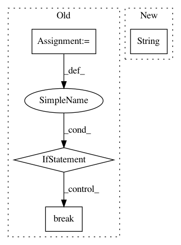

3cee81f6d6f9637d21aad32d360844f6ce7a90c4,framework/Optimizers/GradientBasedOptimizer.py,GradientBasedOptimizer,_removeRedundantTraj,#GradientBasedOptimizer#Any#Any#,294
Before Change
for updateKey in self.optVarsHist[traj].keys():
inp = copy.deepcopy(self.optVarsHist[traj][updateKey]) //FIXME deepcopy needed?
removeLocalFlag = True
for var in self.optVars:
if abs(inp[var] - currentInput[var]) > self.thresholdTrajRemoval:
removeLocalFlag = False
break
if removeLocalFlag:
removeFlag = True
break
if removeFlag:
After Change
for trajInd, tr in enumerate(self.optTrajLive):
if tr == trajToRemove:
self.optTrajLive.pop(trajInd)
self.status[trajToRemove] = {"process":"following traj "+str(traj),"reason":"removed as redundant"}
break
def localCheckConstraint(self, optVars, satisfaction = True):
In pattern: SUPERPATTERN
Frequency: 3
Non-data size: 4
Instances
Project Name: idaholab/raven
Commit Name: 3cee81f6d6f9637d21aad32d360844f6ce7a90c4
Time: 2017-06-21
Author: paul.talbot@inl.gov
File Name: framework/Optimizers/GradientBasedOptimizer.py
Class Name: GradientBasedOptimizer
Method Name: _removeRedundantTraj
Project Name: brian-team/brian2
Commit Name: d5dcc35eab63e7a4244583f438634cd050b8a70a
Time: 2015-12-25
Author: marcel.stimberg@ens.fr
File Name: dev/continuous-integration/conda-server-push.py
Class Name:
Method Name:
Project Name: idaholab/raven
Commit Name: ff45d0c445429e9500953eced5f3eb05e8463392
Time: 2018-08-23
Author: alptezbasaran@ncsu.edu
File Name: framework/CodeInterfaces/CobraTF/CTFinterface.py
Class Name: CobraTF
Method Name: createNewInput